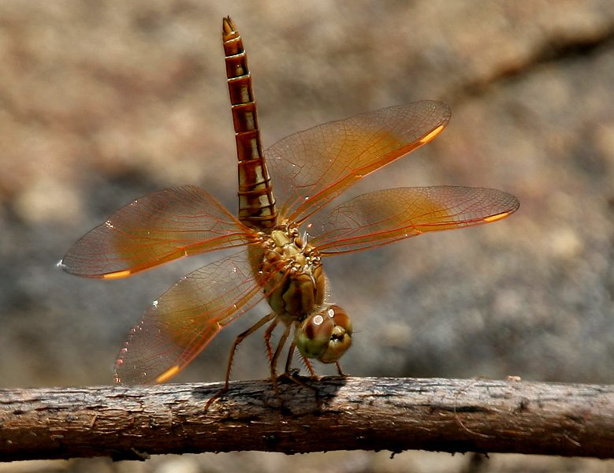

पीली व्याधपतंगDitch Jewel
Brachythemis contaminata · Libellulidae · INS-0016

- Scientific name
- Brachythemis contaminata (Fabricius, 1793)
- Family
- Libellulidae
- Hindi
- पीली व्याधपतंग
- Status here
- native
- IUCN
- LC
When to look कब देखें
Present all year.
पीली व्याधपतंग / Ditch Jewel
Brachythemis contaminata (Fabricius, 1793) — Libellulidae
पीली व्याधपतंग — हमारे आसपास के सबसे प्रदूषित जलाशयों, नालियों और खेतों की जल-निकास नालियों में पाई जाने वाली एक छोटी और सामान्य व्याधपतंग (dragonfly) है। इसके वयस्क नर का शरीर चमकीला पीला-नारंगी होता है और इसके पंखों के मध्य भाग में एक स्पष्ट चौड़ी नारंगी पट्टी होती है, जबकि मादा का शरीर भूरा-पीला और पंख साफ होते हैं। यह अत्यधिक प्रदूषित और गंदे पानी में भी आसानी से प्रजनन कर सकती है, इसलिए किसी जलाशय में इसकी भारी उपस्थिति पानी के अत्यधिक प्रदूषित होने का संकेत देती है। यह कचरा फेंकने वाली जगहों और गंदी नालियों के ऊपर मच्छरों को खाकर एक प्राकृतिक सफाईकर्मी का काम करती है।
Quick Identification त्वरित पहचान
| Feature | Description |
|---|---|
| Size | Small to medium-sized dragonfly (body length 28–35 mm; wingspan 46–54 mm) |
| Male Colour | Bright reddish-orange body; wings have a distinct, broad orange band extending from the base |
| Female Colour | Pale yellow-brown body with dark markings; transparent wings with small yellow base |
| Eyes | Large reddish-brown eyes, meeting at the top of the head |
| Behaviour | Perches close to the ground or water surface on weeds and stones; active in large groups |
Field tip: If you see a small orange-yellow dragonfly perching in large numbers around a highly polluted village drain or dirty puddle, it is almost certainly the Ditch Jewel. The broad orange bands on the male's wings are distinctive.
Morphology आकारिकी
Biometrics (typical measurements in the northern Indian plains):
| Measurement | Range |
|---|---|
| Body length | 28–35 mm |
| Hindwing length | 21–25 mm |
| Wing span | 46–54 mm |
Adult description: The adult male features an olive-brown face and reddish-orange eyes. The thorax and abdomen are bright ochreous-orange. The wings are transparent, with a wide, bright orange-red band covering the middle part of both forewings and hindwings. The female body is olive-brown with dark brown stripes along the back, and the wings lack the bright orange bands, having only a light yellow wash at the base.
Vocalisations
Odonates do not possess vocal organs and cannot produce true vocalisations.
- Sound production: Wing-whirring sounds are produced by rapid wingbeats during territorial disputes, pursuit of prey, or courtship maneuvers. The wing-beat frequency is approximately 30–35 Hz.
Behaviour & Ecology व्यवहार और पारिस्थितिकी
As a water quality indicator, Brachythemis contaminata is a highly pollution-tolerant generalist. It is one of the few odonates that can thrive in heavily eutrophic or contaminated waters. Its abundance indicates poor water quality and habitat degradation, while its complete absence from a formerly populated ditch or drain is a warning sign of toxic chemical contamination.
Larval (Naiad) Stage
The larval stage is aquatic and highly resilient, surviving in low-oxygen mud.
- Body form and breathing: The larvae have a stout, flattened body with dark coloration, camouflaging them in polluted organic debris. They breathe via internal rectal gills, filtering oxygen from water drawn into the abdomen.
- Habitat and duration: They live in submerged mud, rotting organic matter, and weeds in agricultural drains and sewage canals. The larval period is short, taking about 6–8 weeks.
- Emergence: Upon maturity, the larvae climb onto bank vegetation, dry stones, or plastic debris near the water at night to emerge as adults.
Life Cycle / Phenology जीवन चक्र
- Egg: Laid in flight by the female repeatedly tapping her abdomen on polluted water surfaces, often in stagnant zones.
- Larva: Tolerant of low oxygen; feeds aggressively in organic muck.
- Emergence: Occurs throughout the year, with major peaks during the summer and monsoon seasons.
- Adult lifespan: Approximately 4–5 weeks.
- Seasonality: Abundant year-round, showing massive swarms around garbage-laden water bodies in hot weather.
Host Plants or Prey आहार
Prey (adults):
- Mosquitoes and houseflies
- Small midges and sewer gnats
- Flying ants and small moths
Prey (larvae):
- Mosquito larvae (Culex and Anopheles)
- Chironomid larvae (bloodworms)
- Small aquatic worms and water fleas
Predators / Natural Enemies शत्रु
- Birds: House Crow, Common Myna, and drongos.
- Amphibians: Skipper Frog (Euphlyctis cyanophlyctis) at water margins.
- Insects: Larger dragonflies such as the Scarlet Skimmer.
Agricultural / Human Relevance कृषि प्रासंगिकता
Vector controller in urban wetlands. By preying heavily on sewage-breeding mosquito larvae, they play a vital role in suppressing mosquito populations (Culex pipiens / quinquefasciatus), the primary vectors of filariasis. They are highly resistant to domestic soaps and organic waste.
Expected Locally स्थानीय रूप से अपेक्षित
Not a field record. Written from published accounts for eastern Uttar Pradesh. No confirmed local sighting yet — if you have seen it, that is what the atlas needs.
अभी तक स्थानीय पुष्टि नहीं। यह विवरण प्रकाशित स्रोतों से है, किसी अवलोकन से नहीं।
Extremely common in semi-urban drains, open sewers, and village garbage pools throughout Basti and Ayodhya. They are frequently seen perching in hundreds on plastic waste, floating weeds, and concrete edges of canals. Their ability to tolerate high organic pollution makes them the most abundant dragonfly in human-altered habitats in eastern UP.
Distribution वितरण
Global range: Widespread across South and Southeast Asia, including Pakistan, India, Nepal, Sri Lanka, Bangladesh, Myanmar, Thailand, China, and Indonesia.
In India: Abundant in plains and agricultural regions state-wide.
In Uttar Pradesh: Present in all districts, particularly in urban and agricultural areas.
In Basti district / eastern UP: Abundant in all drainage networks and waste ponds.
Research Questions शोध प्रश्न
Anyone can investigate these | कोई भी इन प्रश्नों की जाँच कर सकता है
- How does the presence of organic sewage waste affect the density of Ditch Jewel populations? — Compare counts in unpolluted village ponds vs. sewage pools.
- What is the survival rate of larvae in low-oxygen water conditions? — Monitor larvae in mud samples from stagnant roadside ditches.
- Do female Ditch Jewels prefer egg-laying near floating solid waste? / क्या पीली व्याधपतंग तैरते हुए कचरे के पास अंडे देना पसंद करती है? — Observe and record egg-laying sites.
- How do insectivorous birds adjust their hunting behavior near large swarms of Ditch Jewels? — Observe mynas and crows feeding near open drains.
- What is the maximum salinity and chemical pollution level tolerated by the larvae? — Test water chemistry at active larval sites.
Similar Species मिलती-जुलती प्रजातियाँ
| Species | Key Difference |
|---|---|
| INS-0019 Scarlet Skimmer | Larger; uniform scarlet-red body; lacks broad orange bands on wings |
| INS-0015 Crimson Marsh Glider | Pinkish-crimson body; clear wings with amber base only; prefers cleaner slow water |
| INS-0002 Wandering Glider | Golden-yellow body; clear wings; does not perch close to polluted water surfaces |
Field rule: Small size, bright yellow-orange body in males with a distinct orange band in the middle of each wing, and habitat preference for polluted drains identify the Ditch Jewel.
Taxonomy & Classification वर्गीकरण
Original description. Johan Christian Fabricius described the Ditch Jewel as Libellula contaminata in 1793 in his work Entomologia Systematica Emendata et Aucta (Vol. 2, p. 382). The type locality was India. The genus name Brachythemis was erected by Friedrich Brauer in 1868, and the specific name contaminata is Latin for "contaminated", referring to its characteristic preference for polluted habitats.
Subspecies. Monotypic.
Family and order placement. Placed in the family Libellulidae, order Odonata.
Phylogenetic notes. Genus Brachythemis contains several species that are highly adapted to marshy and human-modified open water zones.
IUCN status rationale. Assessed as Least Concern (LC). Thrives in degraded habitats, and its global population is expanding due to increased human-made wastewater networks.
Photo Gallery फोटो गैलरी
References संदर्भ
- Fabricius, J.C. (1793). Entomologia Systematica Emendata et Aucta. Proft, Hafniae, Vol. 2, p. 382. [original description]
- Fraser, F.C. (1936). The Fauna of British India, including Ceylon and Burma. Odonata. Vol. 3. Taylor and Francis, London.
- Prasad, M. & Varshney, R.K. (1995). A checklist of the Odonata of India. Oriental Insects, 29(1), 385-428.
- Mitra, T.R. (2002). Geographical distribution of Odonata (Insecta) of Eastern India. Zoological Survey of India, Kolkata.
- IUCN SSC Odonata Specialist Group. (2024). Brachythemis contaminata. IUCN Red List of Threatened Species. Ver. 2024.
- GBIF Occurrence Data — Brachythemis contaminata, Uttar Pradesh (2010–2025).
Source file: species/fauna/insects/ditch_jewel.md